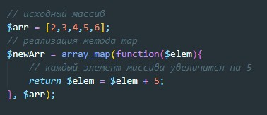
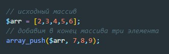
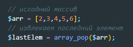
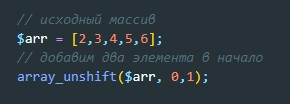
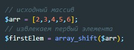
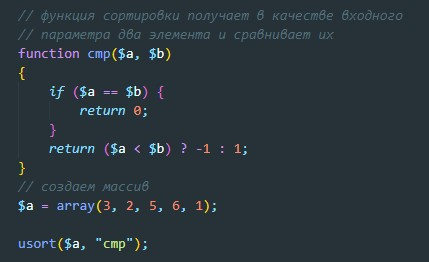
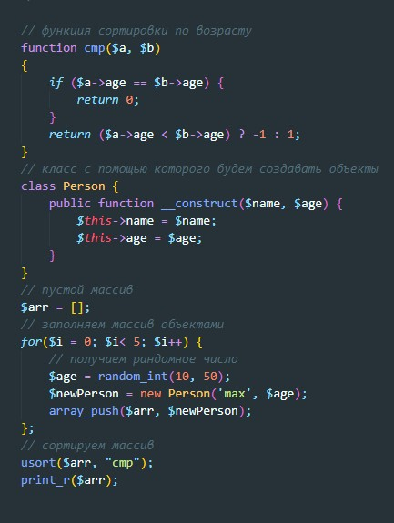
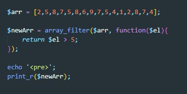
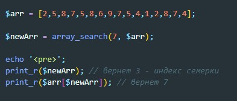

array_map — Применяет callback-функцию ко всем элементам указанных массивов. Метод в качестве аргумента передает колбэк-функции итерируемый элемент массива.
array_push — Добавляет один или несколько элементов в конец массива
array_pop — извлекает и возвращает значение последнего элемента массива array, уменьшая размер array на один элемент.
array_unshift - добавляет переданные в качестве аргументов элементы в начало массива array.
array_shift - извлекает первое значение массива array и возвращает его, сокращая размер array на один элемент.
usort — Сортирует массив по значениям используя пользовательскую функцию для сравнения элементов
Пример сортировки массива с объектами
array_filter — Фильтрует элементы массива с помощью callback-функции
array_search — Осуществляет поиск данного значения в массиве и возвращает ключ первого найденного элемента в случае удачи
